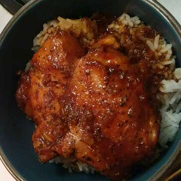

Honey-Garlic Slow Cooker Chicken thighs

It's easy and uses patry staples
Always a hit with adults and kids.
Serve with basmati rice or quinoa and steamed or roasted vegetables.
Ingridients:
- 4 skinless, boneless chicken thighs
- 1/2 cup soy sauce
- 1/2 cup ketchup
- 1/3 cup honey
- 3 cloves garlic, minced
- 1 tablespoon dried basil
Steps:
- Lay chicken thighs into the bottom of a 4-quart slow cooker.
- Whisk soy sauce, ketchup, honey, garlic, and basil together in a bowl; pour over the chicken.
- Cook on Low for 6 hours.
Other recepies